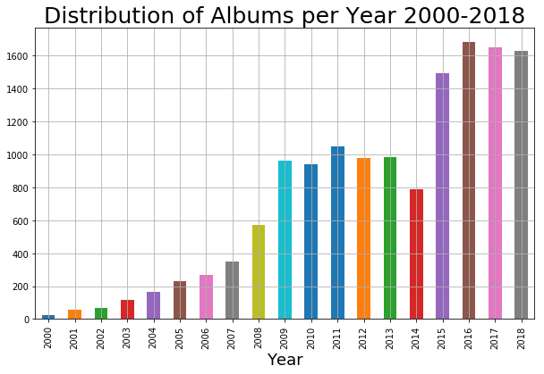
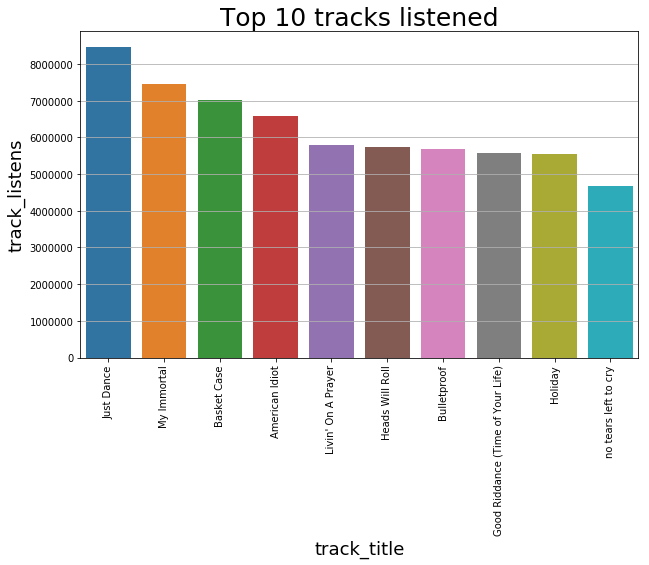
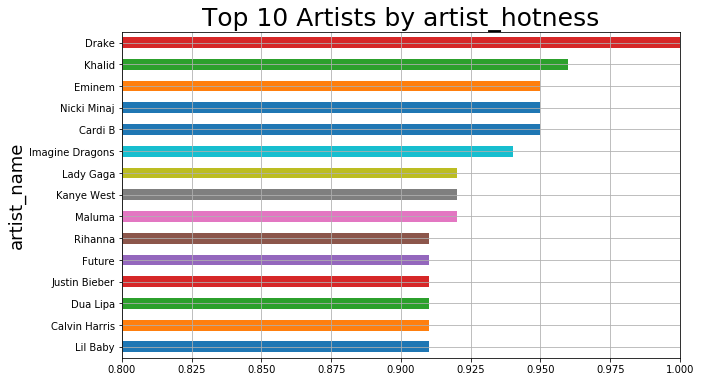

Music is a crucial element of everyday life and human culture. People spend several hours listening to it
and
lots of money acquiring it. “… Whenever humans come together for any reason, music is there,” writes Daniel
Levitin “….weddings, funerals, graduation from college, men marching off to war, stadium sporting events, a
night on the town, prayer, a romantic dinner, mothers rocking their infants to sleep and college students
studying with music as a background….”
History tells that very early man developed primitive flutes from animal bones and used stones and wood as
percussion, producing the first types of music. Voice would have been the first and most natural means of
expression in our distant ancestors, used to bond socially or comfort a sleepless child. It is from these
humble
beginnings that the music we enjoy today evolved.
Today with the explosion of the internet, music Services as Apple Music, Spotify, Tidal and other apps and
platforms; it has become easier to access,
obtain and share music. This project aims to analyze the evolution of music since the 2000s in terms of
songs/genres/artists popularity and preferences, evaluate the key features of the songs, such as energy,
valence, danceability, and others.
We aim to show and understand which were the most popular genres in the last years, the most popular songs,
the
most important artists and what were the trends of the key features of those hits.
Dataset
For this purpose, we'll work with two datasets:
FMA: A Dataset For Music Analysis
Free Music Archive (FMA), is an open and easily accessible music dataset.
The dataset contains the information of 106,574 tracks from 16,341 artists and 14,854 albums,
arranged in a hierarchical taxonomy of 161 genres. It provides full-length and high-quality audio,
pre-computed features, together with the track- and user-level metadata, tags, and free-form text
such
as
biographies. Most useful features from user-level metadata were extracted and used in the current
analysis.
Spotify and LastFM API
: It consists of our crawled dataset created using Spotify and LastFM API.
To complete the previous dataset and extend our analysis to the last years, information from years
2015-2018 was gathered from Spotify and LastFM API for years 2015-2018.
Both datasets were merged into a one complete dataset containing information for the time interval analyzed
which
comprises from the year 2000 to 2018. The results and findings are summarized in the following lines.
How many songs and albums?
Music, like all other arts, evolve over the years and dynamically change according to people's interests
and
demands. Along
history, several genres emerged in different periods of time, in most of the cases influenced by the region
of
origin and particular events occurring at that time. The decade of the 2000s, characterized by the
increasing
interests in internet technologies and social media mark a very important milestone in human's history and
for
sure must have some impact on music evolution. In the following years, such technological evolution
continues with the explosion of streaming and cloud
services, and portable and smart devices, which definitely impacts how people access and consumes music
and will definitely impact their preferences.
We aim to analyze
and understand such music evolution, from 2000 to 2018 in terms of quantity, people's preferences, and
songs
features. To visually understand the growth of music production/consumption over the years, let's see how
many tracks and albums were produced every year.
************* PODEMOS PONER LOS DOS PLOTS EN UNA MISMA LINEA*************

The production of tracks and albums has increased exponentially over the years and as expected, the
production of albums is correlated with the production of tracks.
In the last year (2018), we see a decrement of music production, but it is due to data collection which
does not collect the whole year but only until October.
Have you listened to it?
Song preferences and popularities over the years are difficult to predict and never follow a perfect recipe
since even "similar" people have different music preferences.
Usually, popular songs are the catchy, compelling and commercial ones, meaning they are well crafted and
connect to a broad audience and it causes an action on the part of the listener. It may make them cry,
laugh,
dance, tap their feet, go purchase the song, or simply it causes them to react. Exposure to the song may
also cause them to become more wanted by people, hearing a song enough times makes them "grow on you".
However, and as stated initially, it is impossible to find specific patterns or rules that make songs
popular. Let's show how the songs and albums popularity evolved in the analyzed time interval, the way to
measure popularity is represented by the number of listens in the platforms Spotify/FMA.
************* PODEMOS PONER LOS DOS PLOTS EN UNA MISMA LINEA*************

Let's find your favorite artists!
Artists popularity is closely linked to their song's popularity, in most cases, it can be measured by their
sales and the number of listens they have. Some artists are able to stay popular for a long time due to
their constant release of hits, but others have a temporal and short popularity marked by a unique or few
successes. Do you think your favorite groups/artist will show up in the list of the most popular (highest
hotness) of the last years? Let's explore the rankings.

Such ranking coincides with the artists that have the higher number of streams in Spotify and also with
their number
of followers.
How about the trending genres?
Music genres are conventional categories that identify songs/artists as belonging to a shared tradition or
set of conventions. Music can be divided into different genres and these classifications are often
subjective and controversial, and some genres may overlap. Over the years many new genres have appeared by
the transformation or influence of other genres. This dynamic behavior, which causes genres popularity to
change over time, is also generated by fluctuating people's demands and interests. Now, we present an
interactive visualization which depicts the genre's evolution in the last five years, considering only the
top
10 most popular genres. Their popularity (or hotness) is measured by the mean of all artists hotness who
released songs that year and that belong to that specific genre. Let's explore the results!
Top Genres and Artist according to Hotness from 2013 to 2018
Genres
You can explore the genre's popularity, by moving the cursor over the colored areas.
They represent the top 10 genres (based on song hotness) in the time interval 2013 to 2018.
The genres are: Rock, Pop, International, Instrumental, Experimental, Easy Listening,
Country and Blues. The time interval was considered for the last five years, due to genre variability
over time. For every year, each of the genres is represented by their hotness,
which is obtained by the mean of all songs hotness released on the specified year.
Exploring song Features
The analyzed dataset contains the song's metadata and audio features of each song. How about exploring some
of
these features and their evolution over the years? Are they somehow related to genres/artist evolution?
These features can also help us measure the variations of music during one year, and to achieve higher
granularity we split the analysis by the season of the year (e.g summer, winter, autumn, and spring). All
the songs that were released during the same season are grouped together and the mean of their valence,
energy, and danceability is calculated. Let's explore the results.
Danceability
Danceability seasons 2000-2010
Danceability seasons 2010-2018
How are song features related?
To analyze how song features are related between each other we will plot a 3D kluster analysis,
where we have 8 clusters that groups the songs according to the key features of :"Valence", "Danceability"
"Energy" and also "Hotness".
Conclusions
The projet objective was to analyze the evolution of music since 2000, show the most
popular genres, artists and songs, and see how the keyfeatures changed overtime.
The resulsts obtained are:
Most Popular Genre
Overall the most popular genre on since 2000 is international which may imply that the music plataforms
such as spotify played an important role breaking the
frontiers of sharing music.
This is also shown in the increase of the danceability over the years, and the genre with the highest
average value is international.
Most Popular Artists
The top artists are also related to the genre international, it can be observed in the graph above of
the top 10 artists that we have international influnce, like Khalid, Cardi B, Maluma, etc.
Key features evolution
The key feaures evolution is explained in the previous graphs, summarizing:
1) Danceability: had a constant increase over the last years, because of the main influence of
international music
and the winter is the season with the most danceable songs.
2) Energy: Has a decrease since 2014, which is according to the increase of the genres with lower
energy features. The season where
the energy is the highest is summer.
3) Valence: Valence had an increase until year 2010 and then a decrease, and the season whit the
highest valence is winter, as shown before, related with the danceability feature.
COMO TENEMOS LOS GENRE POPULARITY POR ANHOS (18 ANHOS), PODEMOS RELACIONAR CON ALGUNOS EVENTOS EN INTERNET,
O SI
APARECIO UNA PLATAFORMA (e.g RED SOCIAL), O EL BOOM DEL INTERNET, DE FACEBOOK, SUPONGO QUE PODEMOS
ENCONTRAR
ALGO.
What is the effect/impact of music streaming services on music preferences/popularity?
DE LAS ANTERIORES PREGUNTAS YA TENDRIAMOS COMO VARIAN LOS GENEROS/ARTISTAS DURANTE LOS 18 ANHOS (ANHO POR
ANHO).
EL BOOM DE LOS STREAMING SERVICES CREO QUE FUE 2014. LO QUE DEBERIA PASAR ES QUE SE INTERNACIONALIZE MAS EL
CONSUMO DE MUSICA (e.g. SE ESCUCHE MAS MUSICA LATINA O EN ESPANHOL), PODEMOS INTENTAR ENCONTRAR EL ANHO
DONDE
HAY ESE CRECIMIENTO.
BOOM DE YOUTUBE TALVEZ TUVO UN EFECTO EN LA PRODUCCION DE MUSICA Y LA FORMA DE LLEGAR AL PUBLICO..PODEMOS
VER
ESOS ANHOS Y TRATAR DE ENCONTRAR ALGO